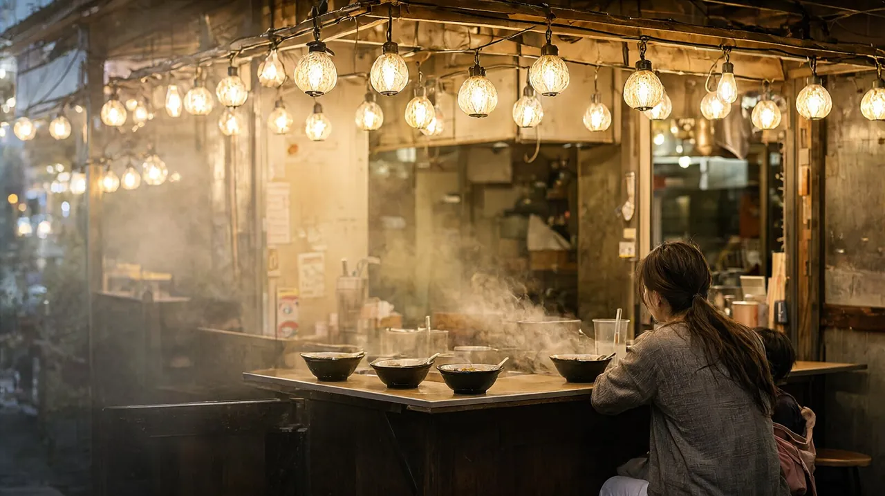

후쿠오카 2박 3일 가족 일정
공항에서 시내까지 5분. 앙팡맨 박물관, 야타이, 다자이후를 담은 아이 동반 2박 3일 코스

성인 2명과 초등 자녀 1명 가족 기준의 2박 3일 코스입니다. 후쿠오카는 공항에서 하카타역까지 지하철로 약 5분이라 도착한 날 오후도 알차게 쓸 수 있습니다. 오전 도착, 오후 3시 이후 출발 항공편을 기준으로 짰고, 하루 방문지는 2~3곳으로 줄여 오후에는 숙소에서 쉽니다.
코스 한눈에 보기
- 1일차공항 → 하카타 → 라멘 점심 → 앙팡맨 어린이 박물관 → 나카스 야타이
- 2일차다자이후 텐만구 → 참배길 우메가에모치 → 큐슈 국립박물관(선택)큐슈 국립박물관은 월요일 휴관
- 3일차후쿠오카 타워(선택) → 공항비행기가 13시 전이면 타워는 생략
1일차도착일, 하카타와 나카스
- 오전 도착
공항 → 하카타역
국제선 터미널에서 무료 셔틀버스로 국내선 터미널로 간 뒤 지하철을 탑니다.
지하철 공항선 하카타역까지 약 5분 (260엔)
- 점심
숙소에 짐 맡기고 하카타 라멘
동네 라멘 가게는 1그릇 700~1,000엔대가 많습니다.
- 오후
앙팡맨 어린이 박물관
나카스카와바타역과 건물 안으로 연결되어 비가 와도 괜찮습니다. 오후가 덜 붐빕니다. 유모차는 안으로 들일 수 없으니 아기띠가 있으면 편합니다.
- 16:30
숙소에서 휴식
아침 비행과 박물관 뒤라 야타이 전에 한숨 돌립니다.
- 저녁
나카스 야타이
강변 포장마차 거리입니다. 대부분 18:30~19:00에 열어 자정 무렵 닫습니다. 현금 위주이고 화장실이 없으니, 아이와는 문 열자마자 가면 대기가 짧습니다.
2일차다자이후 반나절
- 아침
하카타 → 텐진 → 다자이후
지하철로 텐진역까지 간 뒤 니시테츠 후쿠오카(텐진) 역에서 '산책 티켓'을 삽니다. 왕복 전철과 우메가에모치 교환권이 묶인 종이 티켓이라 자동 개찰구 대신 역무원에게 보여 줍니다.
텐진에서 후츠카이치 환승, 다자이후까지 약 30분
- 오전
다자이후 텐만구
학문의 신을 모신 신사로 입장은 무료입니다. 참배길에서 교환권으로 우메가에모치를 받아 먹습니다.
- 선택
큐슈 국립박물관
시간이 남으면 신사 옆 박물관에 들릅니다. 9:30~17:00, 월요일 휴관이고 고교생 이하는 문화교류전이 무료입니다.
- 14:30
점심 후 숙소 복귀, 낮잠
저녁은 캐널시티나 하카타역 식당가에서 가볍게 먹습니다.
3일차귀국일
- 오전 · 선택
후쿠오카 타워
9:30에 엽니다. 체크아웃 후 짐을 들고 다녀오는 코스라 비행기가 13시 전이면 생략합니다.
하카타역에서 버스 약 25분
- 출발
하카타역 → 공항
지하철로 국내선 터미널역까지 약 5분, 출구 1A 또는 2A로 올라가 1번 승강장에서 국제선 무료 셔틀을 탑니다(낮에는 5~6분 간격). 체크인은 국제선 터미널 3층입니다.
공항 도착 시간출발 2시간 30분 전 도착을 권합니다. 면세 쇼핑을 했다면 짐을 부치기 전에 환급 절차를 먼저 마치세요. 면세 환급 절차 보기
비 오는 날
앙팡맨 어린이 박물관은 전천후 실내 시설입니다. 후쿠오카 시 과학관(화요일 휴관)과 마린월드 수족관도 실내 대안입니다.
미리 예약할 것
- 항공권, 숙소 (필수)
- 앙팡맨 어린이 박물관 (선택): 예약제는 아니지만 날짜 지정 웹티켓을 입장 60일 전 10시부터 팝니다.
- 다자이후 텐만구, 후쿠오카 타워, 야타이 대부분은 예약이 필요 없습니다.
같이 보면 좋은 글
- 후쿠오카 3박 4일 가족 일정: 마린월드 또는 야나가와 하루 추가
- 후쿠오카 여행 가이드
- 출국 전 체크리스트
출처
후쿠오카공항 공식, 앙팡맨 어린이 박물관 공식, 다자이후텐만구 공식, 니시테츠 공식, 큐슈 국립박물관 공식, 후쿠오카 타워 공식, 후쿠오카 시 관광 공식, 일본 세관. 요금과 운영 시간은 바뀔 수 있으니 이용 전 공식 안내를 확인하세요.